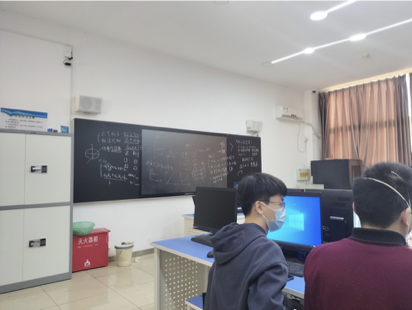
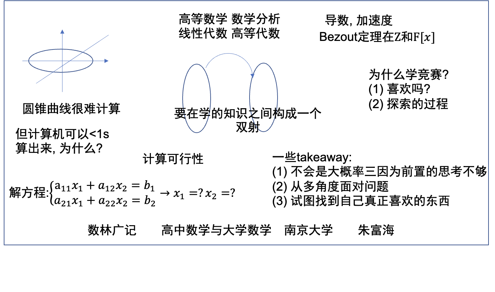

$$ \Huge \textbf{简单介绍} $$
$$ \boxed{ \overbrace{\textit{degaokaolization}}^{\small{去高考化}} \text{ Discussion Group | Introduction}} $$
欢迎各位刚经历过高考的同学们! 在高中的时候, 你们的老师可能告诉过你们"上了大学就轻松了"、"只要上了好大学, 就一定有怎样的好工作等等".
但是事实是: 老师的这些话语并不是真的. 或者说, 他们是不符合实际情况的 - 至少不符合计算机系的实际情况. 但也不要过于悲观, 一会我们会简单说说关于"竞争"与"学习".
到了大学以来, 不同于以往的"付出就有收获"的价值观, 你可能会亲眼看见(甚至就是你自己)那些"努力也无法获得回报"的人, 那些"想努力却无从努力的人", "太过努力而身心俱毁的人", 还有"本想好好努力, 但是一想到'反正也轮不到我'就打退堂鼓的人"...
所以, 之所以你认为"努力就有回报", 那是因为你一直以来的环境: 有人鼓励你, 在背后推着你走; 在面前提携你, 肯定你的进步. 因此, 环境因素不容小觑, 很大程度上是环境造就了你的方方面面.
当你与来自更优渥的环境中的同学进行比较的时候, 往往会陷入深深的焦虑. 提出诸如"为什么我不行而他可以"的问题. 要回答这个问题, 可能需要追溯到很久很久之前. 而"如何达到像他一样的水平", 有些时候也是无解的.
大家都过着同样的时间, 而你一定是用这些时间探索其他的事情去了. 因此, 不用太担心 - 因为你总有一个方面是经历了时间的考验的, 做得比别人好的, 拿出手来有自信的. 可能只是暂时因为外界评价的原因, 暂时封藏在了心底. 如果感到苦恼, 试着像一个办法认识一下自己, 一点也不要着急.
问题. (1) 列举初中, 高中教师对你做的比较negative的一些事情. (2) 列举中学阶段你不认可的校规.
在接下来的一些介绍里面, 你会发现任何人在某一些方面上都是"努力却得不到回报的".
我们先暂时换一个内容, 来看一看一些故事.
我在郑州一中的机房待了两年. 当时是因为信息竞赛的缘故. 但如果你问我"我到底学没学过竞赛", 可能我也不知道怎么回答. 原因很简单: 在弱省打得很烂. 当然, 有一个非常"主流"的衡量竞赛生是不是"成功"的观点: 看一看有没有得到升学的任何优惠政策.
没错, 这的确是一个最"粗暴"的判定方法. 事实上要是想获得这样的条件也是十分苛刻的 - 尤其是在强基计划出台之后. 即使是最优秀的选手有时候也有被校方毁约的情形.
但我想更有趣的一个判定方法是: 看一看这些"成功"的年轻人到了大学之后真正如愿, 并且用自己喜欢的方式继续学习下去了吗?
接着说. 教练似乎很满意他的这一届学生 - 现在大约还有10人继续参加信息竞赛, 并且大部分都已经在高一获奖. 但在提问环节, 他们更多的问题还是"学习这个有什么用".
当然, 这个问题本身也是非常好的. 于是借着这个稍微即兴发挥了一下, 如图:

当然虽然疫情过去了, 但是我们还被要求戴着口罩. 当然, 显然这个宽度是看不清黑板的, 于是我简单用现代的工具试着让这个图片变得更清晰:

在众多的选手中, 有一位还没有获奖的同学跑过来找我. 事实上, 他的问题看上去更加的不同, 于是说:
我感觉我对于硬件的了解还是挺多的.
那个瞬间有一点感觉到有一点快乐, 同时也有一点无助 - 快乐是因为如果对于硬件有研究的话, 其实已经说明自己在硬件方面知识已经很多了. 无助是因为, 硬件知识, 这门竞赛它不考啊! 不过即使是这样的学生, 在如此开放的郑州一中恐怕可能也没有几个 - 大部分还是在卷高考 - 根据下一届的学生的话语.
接下来可能让我感觉到非常无语的事情发生了: 很多同学居然不知道如何使用调试器! 不过原因可能是多方面的. OI可能本身对这个要求就不高, 所以能够用非常原始的方法调一调大多数情况也能成功. 不过更重要方面是没有人告诉过他们应该这样用!
试想一下, 这样的学生, 在未来的工程工作中要靠着及其原始的方法来调试成百上千行的代码. 难怪学起来累得不轻! 所以说, 有时候感到学习有困难, 并不是智力上面的问题, 有更多的情况是没有找到正确的方法.
说回到大学: 每个人都希望在大学里面拥有更好的条件 - 学习条件, 生活条件. 但是一个不幸的事实是: 中国大陆的计算机专业, 即使进了大众眼里的"双一流"往上的专业, 教育水平可能是随机的.
这一点是比较有趣的. 如果你有已经上大学的学长, 不妨问问他们的感受. 并且到你自己上大学接收到那些教科书的时候, 自己的心中也是有所感叹的. 幸运的是, 现在互联网上有五花八门的课程. 你可以借此自救. 我们后面会说更多这方面的内容.
我待的这个地方不令人满意，每个角落都老旧得像一副吱呀作响的空马车骨架（不是物理意义），荒唐得无可救药。但看到jyy(注:蒋炎岩)的OS，上了蚂蚁老师(注:魏恒峰)的编译原理，为真正的通识而设的DIY课，又让人觉得极其promising，非常割裂。其实他们证明的是，改变不难，只要做的事是真的，现状就会好转，vice versa
-- Bling, NJU
那教育水平看上去是听天的, 那生活水平呢? 比较好的消息是: 生活水平看似更有迹可循一点: 以前早有人帮助我们做过这件事情了. 网站大学生生活质量指北就是为我们量身定制了学生互相发言的平台. 在报考一所院校之前, 不要忘记来这里看看.
说实话, 上面的那一段话也是结合了大部分同学的生活经历, 少部分参考了大学生生活质量指北上面的一段话:
既然你选择在国内就读本科，那么不要对教学水平抱有任何期望。总体上来说，如果把视线放在三本到一本，那么分数越高，遇到优质教学的概率就越大；但如果把视野放到所有 985 这样的小范围里，那么教学质量具有高度随机性。你必须做好自学的准备。
来看这一页书 -
先不要着急害怕, 不要着急想"我的文言文又要扣多少分了". 事实上, 这都无所谓. 我们来仔细体会一下这篇文章说了什么. 更轻松的是, 我们还有注解. 虽然是用文言文写的, 但也比没有好很多.
到这里, 我们又提出了一个问题. 像这样的问题, 回答起来至少是不那么容易的. 通常, 你可能需要调动你之前所有遇到的想法来回答这个问题. 而且这样的探索 - 你会很快看到 - 是必备技能, 也是很好的一件事情.
我个人的感觉是, 在郑州一中读高中的时候, 有两位老师对我的影响比较大. 一位是教语文的吴珂老师, 另一位是教化学的王瑞瑶老师.
即使在高三的最后, 王老师依然向我们展示什么是教育. 不过可惜的是, 我们是他教过的最后一届高三毕业生. 我们为什么要上学? 显然, "考一个好大学" 这种说法不用怎么想就显得站不住脚 - 因为这样一来, 上了大学之后就没有什么用处了.
在某一次晚自习的时候, 王老师说的这样的一段话:
"我们教育的目标不是你会做多少题, 不是说记住了多少东西, 而是对你产生了什么样的改变. 我们教育的目标是你."
事实上, 类似与这样的富有哲理的话还有很多. 这种风格很像大学教授. 当时有少部分同学不适应, 是因为没有梳理条目化的笔记, 但是可能更多的同学还是
$$ -\mathscr {\red{\Large NOT}E}\text{nd of the note}- $$